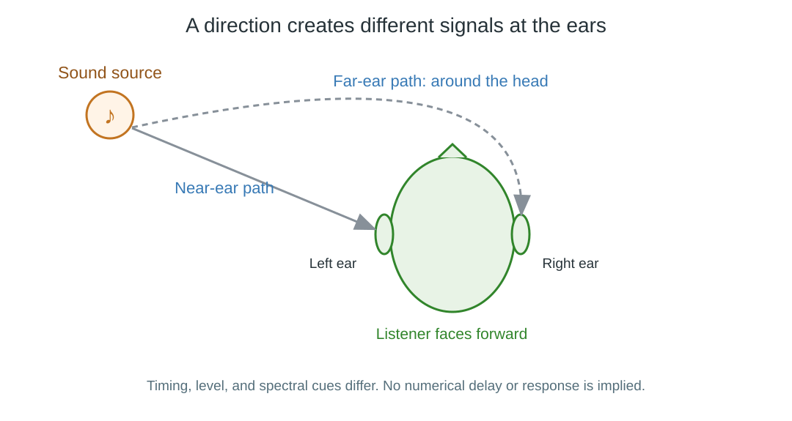

Binaural Audio
Binaural audio is designed around the signals reaching two ears. Differences in arrival time, level, and frequency response help the listener perceive where a sound is coming from, including directions that ordinary left/right balance does not fully describe.
It can be recorded with microphones positioned like ears, or generated by filtering sound for a modeled listener. The filtering uses head-related transfer functions, or HRTFs: descriptions of how the head, torso, and outer ears alter sound arriving from a direction.

Qualitative illustration of unequal paths to the ears. Timing, level, and spectral cues depend on direction and the listener; the diagram contains no measured delay or filter response.
Two channels can carry a spatial presentation
A finished binaural render usually has one channel for each ear. Its file can therefore be labeled stereo even when it was created from many spatial sound components.
| Two-channel presentation | What its signals are intended to represent |
|---|---|
| Conventional stereo mix | Left and right sides of a soundstage |
| Binaural render | Sound reaching the left and right ears |
Headphones deliver those signals to the ears with relatively little acoustic mixing between sides. Speakers send each signal to both ears and add the room's response, so a headphone-oriented binaural render does not necessarily produce the same spatial result over speakers.
Individual anatomy matters. An HRTF that works convincingly for one listener may make elevation or front/back distinctions less clear for another. Head tracking can update generated cues as the listener moves, but a stored two-channel binaural recording does not automatically contain such a capability.
In Emby, the channel count alone cannot identify whether a track is binaural. Track descriptions or the release's documentation may provide that context. If the signals already contain binaural cues, another virtual-surround processor can alter the intended presentation rather than simply adding more spatial detail.